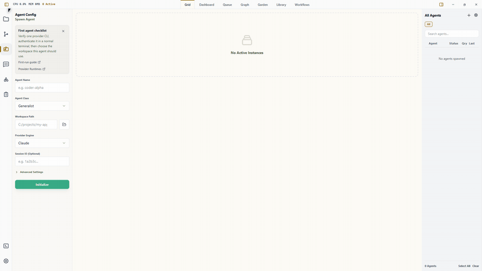

Live agent operations
Spawn and watch provider CLI agents from one desktop app, with PTY-backed terminals, status, telemetry, and retained output.
A modular, local-first desktop habitat for the agents, workflows, reusable context, and live runtime state you run locally.
Wardian gives the agent tools you already run durable identity, live terminals, scoped skills, workflow runs, Queue evidence, and workspace context in one GUI-first habitat. It is moving toward Sites, Cohorts, and movable surfaces for malleable agent work. Public documentation remains available at docs.wardian.org.

Spawn and watch provider CLI agents from one desktop app, with PTY-backed terminals, status, telemetry, and retained output.
Send prompts, broadcasts, lifecycle commands, and structured peer handoffs through the app and the bundled wardian CLI.
Keep classes, skills, prompts, workflows, queue evidence, and project context visible as reusable local artifacts.
Wardian adapts real local provider CLIs into the same agent lifecycle, telemetry, skill, and workflow model.
Real-workspace execution with per-agent habitat state.
Session-aware runtime with permission hooks.
Real-workspace runtime with skill discovery support.
Native AGENTS.md discovery and transcript-based turn state.
Native AGENTS.md discovery with Wardian-scoped config.
Pre-built binaries are published on GitHub Releases. Choose the asset that matches your operating system and CPU.
Standard x64 installer.
Wardian_X.Y.Z_x64-setup.exe
Download for Windows
For M-series Macs.
Wardian_X.Y.Z_aarch64.dmg
Download for Apple Silicon
For older Intel Macs.
Wardian_X.Y.Z_x64.dmg
Download for Intel Mac
Installable x64 Debian package.
Wardian_X.Y.Z_amd64.deb
Download .deb
Portable x64 Linux app.
Wardian_X.Y.Z_amd64.AppImage
Download AppImage
Current binaries are unsigned. Windows SmartScreen and macOS Gatekeeper may show first-launch warnings.